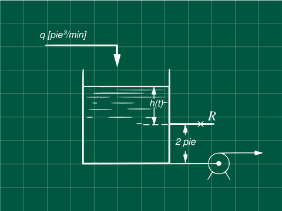

Problema 5.2 (Process Control- Coughanowr, LeBlanc)

El sistema mostrado en la figura tienen un área seccional A=3 pie², la ecuación de la válvula es q=8h. Con q en [pie³/min] y h (altura desde encima de la válvula) en [pie].
Calcule la constante del tiempo τ para cuando la altura por encima de la válvula en estado estacionario es a) 3 pie y b) 9 pie.
Resolviendo
DatosA=3 pie²q0=8h
Linealizando q0=8h
La expandimos usando las serie de Taylor al rededor del estado estacionario.
f(x)=f(xs)+dtdf∣∣∣∣∣x=xs(x−xs)
q0=8hs+sqrths4(h−hs)
q0=q0s+sqrths4(h−hs)
q0−q0s=hs4(h−hs)
Hagamos R=4hs (A)
q0−q0s=R(h−hs)(1)
Realizando el balance en el sistema
q−q0−qb=dtdV(2)(2)
Escribiendo el balance en estado estacionario
qs−qs0−qb=0(3)
Restando (2) con (1) para obtener las variables desviación y recordando que dh=d(h−hs), por ser hs constante.
q−qs−(qs−qs0)=Adtd(h−hs)
Reemplazando con la ecuación (1)
q−qs−R(h−hs)=Adtd(h−hs)
Transformando a variables desviación
Q−RH=AdtdH
Aplicando la tranformada de Laplace y sabiendo que H(t=0)=h−hs=hs−hs=0
Q(s)−RH(s)=A[sH(s)−H(t=0)]Q(s)−RH(s)=AsH(s)
Q(s)H(s)=ARs+1R
Por comparación con el modelo de primer orden Q(s)H(s)=τs+1Kp y sabiendo que A=3 y R=hs/4
Notamos que
τ=AR=34hs
Para a) hs=3
τ=1.2990min
Para b) hs=9
τ=2.25min
Referencias
Coughanowr, D. R.; LeBlanc, S. E. (2009). Process Systems Analysis and Control (3rd edition). McGraw-Hill. ISBN 978-0-07-339789-4.